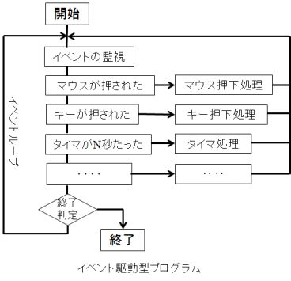
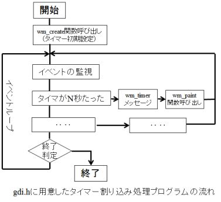
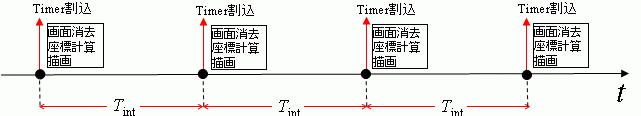
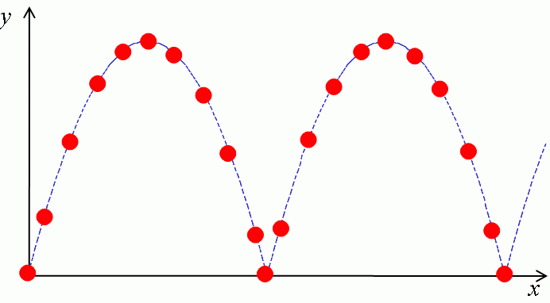
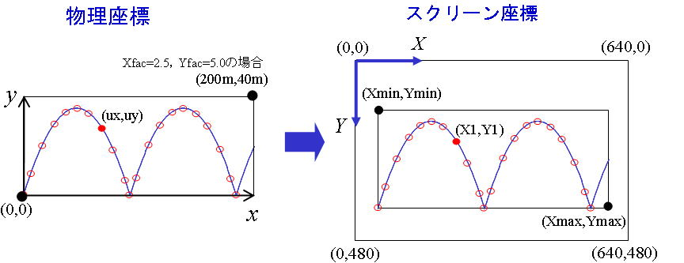
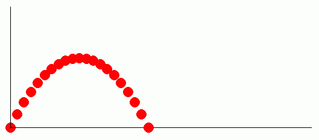
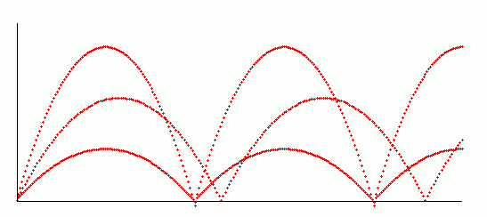

| プログラミングおよび演習 ＮＯ.14 |
| ボールの放物線運動のアニメーション |
前回習ったグラフィクスは静止画を描くためのプログラムでした。今回は、そのグラフィクスプログラムをさらに発展させて、動きのあるアニメーション（動画）を作ることにします。アニメーションをどのように作ればよいかというと、一定時間ごとに、静止画像を次々に描き変えていくことで実現できます（パラパラ漫画と同じ仕組みです）。
一定時間ごとに画面を書き換えていく処理は、簡単そうに見えますが、ここで一つ大きな問題があります。それは、PCの画面を管理しているWINDOWS
OSや並列動作している他のアプリケーションとの間で干渉しないようにしながら、一定時間間隔ごとに画面を書き換える必要があることです。幸いなことに、本演習で用いているGDIライブラリ（WINDOWS
APIの一つ）は、WINDOWS OSの管理のもとに動作するプログラムです。WINDOWS OSは、外部からのイベントを受け付けて動作するイベント駆動型プログラム（補足説明を参照）によって、複数のプログラムが互いに干渉することなく並列動作する仕組みを実現しています。あるプログラムでイベント（キーボード、マウス、タイマーなどによるイベント）が発生したとします。この時、並列に走っている他のプログラムを中断して、発生したイベントを優先して受け付ける処理を割り込み処理と言います。その中で、タイマー（時計）によって発生する割り込みを、タイマー割り込みといいます。アニメーションプログラムは、このWINDOWSが用意しているタイマー割り込みルーチンを使います。
ところで、本演習も今回で最終回を迎えてしまい、WINDOWS アプリケーションプログラムについて、これ以上詳しく取り上げる時間がなくなってしまいました（興味のある人は、この後独学で勉強して貰うとよいと思います）。そのため、今まで覚えたC言語の知識だけを用いて、簡単にアニメーションプログラム（WINDOWS
API を用いたタイマー割り込み描画プログラム）を作れるように、ヘッダファイル gdi.h を用意しました。本演習ではこれを使ってアニメーションプログラムを作ることにします。そのプログラムの作成手順を以下に示します。
(補足) イベントには、『キーボード入力』、『マウス入力』、『タイマー割り込み』などがあります。Windowsアプリケーションプログラムは、これらのイベントが発生したら何かを行うという方式のプログラムです(図を参照）。これをイベント駆動型プログラムと言います。そのプログラムの動作は、コンピュータのOS環境の中でどのようなイベントが発生するかに依存します（並行して走っている他のプログラムによってプログラムの実行順序が変化する）。これによって、WindowsOSと協調しながら、アニメーションのような一定時間間隔で動作するプログラムの実行が可能になります。これに対して、今までの第12回までの演習で習ってきたプログラムは、予め決められた順番に従って命令を実行する逐次実行型のプログラムです。このプログラムは単体の動作しか考えていませんので、途中で他のプログラムが割り込んだ場合、アニメーションがそこで一時停止してしまう不都合を生じます。
■ ヘッダファイル(gdi.h)を用いたタイマー割込描画プログラムの作成手順
ここでは、ヘッダファイルgdi.hに用意したアニメーションプログラムの作り方について説明します。そのために必要なことはヘッダファイルgdi.hをインクルードすることと、プログラム本体にwm_create関数とwm_paint関数の二つの関数を用意することです。右図はプログラム処理全体の流れの中で各々の関数がどのようなタイミングで呼び出されるかを示しています。
まず、プログラムの開始直後にwm_create関数が呼び出されるので、ここにイベントループに入る前の初期設定のためのコード（タイマーの初期設定関係のコード）を記述します。その後、プログラム本体であるイベントループにはいります。ここでは、タイマー割り込みが発生する度に、wm_paint関数が呼び出されます。このwm_paint関数の中に、一定時間ごとに繰り返して描画したいコードを書けば良いことになります。具体的な作成手順は以下のようになります。
また、描画前の画面を消去するか否かを（アニメーションにするには前の画像を消去する。一方、軌跡を重ね書きしたい場合は、消去しないで残しておく）、以下のように設定します。
#define ERASE TRUE（またはFALSE）
（消去する場合はTRUE、上書きする場合はFALSE)。
(2) ヘッダファイルgdi.hのインクルード
上記(1)のdefine文の後に、ヘッダファイルgdi.hを以下のようにインクルードします。
#include "gdi.h"
(3) wm_create関数の記述
描画処理に入る前の初期設定（画面作成時に呼び出される）を、以下のようにwm_create関数の中に記述します。
void wm_create(void)
{
ここで、描画処理に入る前の初期設定を行う。
}
wm_create関数が呼び出された後、タイマーカウントを開始します。
(4)wm_paint関数の記述
タイマー割り込み処理ルーチンの中で、描画メッセージが発生すると、wm_paint()関数が呼だされます。
wm_paint()の中に、タイマー割り込みの度に、描画したいプログラムを以下のように記述します。
void wm_paint(void)
{
ここに、タイマー割り込みの度に実行する描画プログラムを記述する。
}
(5)タイマカウンタの利用
タイマー割り込みの度に、割り込みルーチンの中でタイマカウンタCountを、
Count=Count+1
に従って１づつ増やしています（タイマー割り込み回数を数えている）。
このタイマカウンタを、プログラムの中で次のように使います。
はじめに、準備として、wm_create関数の中で、
Count=0
として、タイマカウンタの初期値を0にしておきます。
タイマカウンタCountを用いて、
・wm_paint関数の中で、
t=Count*tdel;
のような式を作ることにより（tdelは時間きざみ）、描画開始からの時間tを求めることができます。

| /* タイマ割り込み描画プログラム */ #define PROGRAM "ex14-1" /* タイトルバーの表題 */ #define TIMER TRUE /* タイマー割込みの有無 */ #define TIMEINT 20 /* タイマーのタイムインターバル[ms] */ #define ERASE TRUE /* 割り込み時の画面消去の有無 */ #include "gdi.h"/* グラフィック用ヘッダファイル */ /* ここに、wm_createとwm_paintで共通して使用する変数を宣言する */ void wm_create(void) { /* 画面生成時に呼び出される関数 */ /* ここに、タイマ割り込み処理の前に実行したい初期設定プログラムを記述する。*/ } void wm_paint(void) { /* タイマ割り込みの際に呼び出される描画関数 */ /* ここに、タイマ割り込みにより一定時間間隔ごとに繰り返して実行したい描画プログラムを記述する。*/ } |
ｍαi＝Ｆi (1)
のニュートンの運動方程式によって支配されます。水平方向（ｘ方向）と鉛直方向(ｙ方向）の各々の方向に、この運動方程式を適用すると次式のようになります（加速度αiは、ui の時間ｔに関する２階微分で表わされることに注意する）。
ｄ2uｘ
ｍ ＝0 （ｘ方向の運動方程式） (2)
ｄｔ2
ｄ2uｙ
ｍ ＝-ｍｇ （ｙ方向の運動方程式） (3)
ｄｔ2
上式を時間ｔで積分し、初期条件として、ボールの初速度をｖ0、初期位置を(ux0,0)とすると、次式のように答えが求まります。
uｘ＝ ux0 + ｖ0ｔ cos θ＝ux0 +ｖｘ0ｔ (4)
ｇｔ2 ｇｔ2
uｙ＝ｖ0ｔ sin θ- ＝ｖy0ｔ - (5)
2 2
ここで、vx0(=v0 cosθ) はv0のｘ方向成分、vy0(=v0 sinθ) はv0のy方向成分である。

■ボールの放物運動描画プログラムの作成方法
以上の計算式に従って、ボールの放物運動軌跡を描くアニメーションプログラムを、どのように作ればよいか考えます。
プログラムの仕様
(1) y=0の位置に地面を考える。ux=0, uy=0の位置にボールをセットし、ｔ=0[s] の時間に、V0＝30[m/s]の初期速度で角度Thetaの方向にボールを打ち上げる。Thetaはキーボードから入力して、変えられるようにする。
(2) 時間ｔをTdelの時間づつ増やしていきながら、ボールの運動軌跡を画面に描く。まず、ボールが地面に着地するまでの軌跡を描くよう時間を設定する。１回の跳ね返りまでの時間（地面に着地するまでの時間）Tlandが、
Tland=2.0*Vy0/g
で与えられる。ここで、Vy0(=V0*sin(Theta)) はV0のy方向成分である。
ここでは、打ち上げから着地までの間の、ボールの描画回数をDnumとして、物理座標上の描画時間間隔 Tdelを、
Tdel＝Tland/Dnum
のように設定する（デフォルトは、Dnum=100に設定）。
(3) スクリーン座標の（Xmin=60，Ymin=150)と（Xmax=560，Ymax=350)の２点を対角とする四角を描画領域にする。
プログラムの詳細
wm_paint()関数の中に以下のようなプログラムを作ることにより、タイマ割り込みによる描画処理を繰り返す。
(１)タイマによる時間更新
タイマ割り込みの回数は、タイマカウンタ変数Countに、保持されている。
ボール運動の経過時間tを、タイマカウンタCount、時間きざみTdel を用いて、
t=Tdel ｘ Count
に従って更新していく。
(２) ボール位置の計算
時間ｔにおける、ボールの位置(ux,uy)を、式(4),(5)を用いて次のように求める。
ux=Ux0+Vx0*ｔ;
uy=Vy0*t-g*t*t/2.0;
ここで、ボールの初期位置のｘ座標Ux0は、ボールの打ち上げ時点ではUx0=0に設定しておく。
(３) 物理座標からスクリーン座標への変換
スクリーン座標の（Xmin=60，Ymin=150)と（Xmax=560，Ymax=350)の２点を対角とする四角の中にグラフを描く。そのために、ボール位置の物理座標（ux,uy)を、次式に従ってスクリーン座標（X1,Y1)に変換する。
X1=Xmin+ux*Xfac;
Y1=Ymax-uy*Yfac;
（物理座標とスクリーン座標は、原点の位置が異なる、また、y軸の向きが逆であることに注意する）
ここで、(Xmin,Ymax)はスクリーン座標の左下隅の座標、（Xfac,Yfac)はx,y各々の方向のスケールファクタであり、計算対象の物理領域の大きさを考慮して決定する。例えば、Xfac=2.5、Yfac=5.0に選んだ場合、物理領域は200m×40ｍの大きさになる。
(４) ボールの描画
計算されたボール位置（X1,Y1)に半径Radiusの大きさのボールを模擬した円を指定色で描画する。
G_FCIRCLE(X1,Y1, Radius, Red);
以下の例題では円の半径をRadius=8、円の色をRedに選んでいる（これらのパラメータは状況に応じて適宜変更する）。
(５) 終了判定
ボールが着地する（y方向位置Y1がYmaxより大きい）、もしくは、ボールが画面の右端を越えたら（x方向位置X1がXmaxより大きい）、上記の描画処理を終了する。

| 演習問題 14-1 (Revised : 2017/1/5) 上記の考え方に従って作成したプログラムを以下に示す。 (1)未完成の部分（@@@の記号の部分）を補う形で、プログラムを完成させなさい。また、アニメーションプログラムの動作を説明してください。 ヒント：ボールが地面に着地したかどうかの判断を、if(Y1>=@@@)ではなく、if(Y1>=@@@ && Count>1) としている。その理由について考察せよ。 (2)終了判定ルーチンの部分を削除すると、どうなるか試してください。 (3)TIMEINTやDnumの値を変えると、アニメーションの描画速度や画面のちらつきが変わります。いろいろ試して最適な値を探してみてください。 (4)ERASEをFALSEにすると、ボールの運動軌跡をストロボスコープのような画像で描くことができます。ボールの運動の様子が良く分かるように、Dnumを最適値に調整してみてください。  #define PROGRAM "ex14-1"
#define TIMER TRUE /* タイマー割り込みの有無 */
#define TIMEINT 20 /* タイマーのタイムインターバル[ms] */
#define ERASE TRUE /* 割り込み時の画面消去の有無 */
#include "gdi.h"
float g=9.80665; /* 重力加速度 */
int Dnum=100; /* 着地までの描画回数 */
int Radius=8; /* ボールの描画半径 */
int Xmin=60, Xmax=560, Ymin=150, Ymax=350;/* 描画領域の範囲 */
float Xfac=2.5, Yfac=5; /*座標変換のスケールファクタ*/
float Vx0,Vy0,V0,Ux0;
float Tland,Tdel,Theta;
int X1,Y1; /* 現時刻のボール位置 */
void wm_create(void)
{
V0=30; /* 初速度 */
Count=0; /* タイマーカウンタを0に初期化 */
Ux0=0.0; /* x方向の初期座標 */
printf("打上角度="); fflush(0);
scanf(@@@); /* キーボードから、変数Thetaに打上角度(°)を入力 */
Theta=Theta*PI/180.0; /* Thetaの単位を°からラジアンに変換 */
Vx0=@@@; /* x方向の初速度 */
Vy0=@@@; /* y方向の初速度 */
Tland=@@@; /* 着地までの時間 */
Tdel=@@@; /* 描画時間きざみ */
}
void wm_paint(void)
{
float ux,uy,t;
t=Tdel*Count;/*打ち上げ後の経過時間*/
ux=@@@; /* ボールのx座標(物理座標) */
uy=@@@; /* ボールのy座標(物理座標) */
X1=@@@; /* ボールのx座標(スクリーン座標) */
Y1=@@@; /* ボールのy座標(スクリーン座標) */
G_LINE(Xmin,Ymin,Xmin,Ymax,Black);/* y軸の描画 */
G_LINE(Xmin,Ymax,Xmax,Ymax,Black);/* x軸の描画 */
G_FCIRCLE(@@@); /* 現地点(X1,Y1)に半径Radiusの大きさのボールを指定色で描く*/
/* ボールが地面に着地した時はタイマ停止 */
if(Y1>=@@@ && Count>1){
KillTimer(hwnd,ID_TIMER);/*タイマを停止させる*/
return;
}
/* ボールが右端に到達した時はタイマ停止 */
if(X1>=@@@){
KillTimer(hwnd,ID_TIMER); /*タイマを停止させる*/
return;
}
}
|
| 演習問題 14-2 (Revised : 2017/1/5) 演習問題 14-1のプログラムを次のように変更してみてください。 (1) 1回目の着地の後、ボールが跳ね返るようにプログラムを変更する。 ヒント： ○Tdelの時間きざみで時間tを増やしながら、ボールの位置(ux,uy)およびそのスクリーン座標(X1,Y1)を逐次計算していく。 その際、最初にボールを投げてからの時間ではなく、投げ上げ地点（または直前の着地点）からの経過時間をtとする。また、投げ上げ地点のx座標をUx0とする。 この時、式(4)に示すように、ボールのx座標uxは、時間t経過後のx方向の移動距離に、Ux0を加えた値になる。また、ボールのy座標uyは、式(5)に経過時間ｔを代入した値になる。 ○演習問題14-1では、ボールが着地した時に、KillTimer関数を呼び出してタイマーを止めて描画処理を終了させた。タイマーを止めずに以下のようにすれば、跳ね返り後の処理を継続することができる。 ・タイマーカウンタCountを0に戻す（時間tを0に戻す）。 ・ボールの初期位置Ux0を着地点のx座標に設定する。 ・returnでwm_paintを終了する。 ○ボールが右端に到達したら、タイマーを止める。 以上の考え方に従って、次のようにプログラムを作る。 （最初は、着地点のx座標Ux0および、タイマーカウンタCountを0にしておく。） t=Tdel*Count; /*打ち上げ後(跳ね返り後)の経過時間*/ ux=@@@; /* ボールのｘ座標（物理座標） */ uy=@@@; /* ボールのｙ座標（物理座標） */ X1=@@@; /* ボールのx座標(スクリーン座標) */ Y1=@@@; /* ボールのy座標(スクリーン座標) */ G_LINE(Xmin,Ymin,Xmin,Ymax,Black);/* y軸の描画 */ G_LINE(Xmin,Ymax,Xmax,Ymax,Black);/* x軸の描画 */ G_FCIRCLE(@@@); /* 現地点(X1,Y1)に円を描く */ /* ボールが地面に着地した場合の処理 */ if(Y1>=@@@ && Count>1) { @@@; /* タイマーカウンタCountをゼロに戻す */ @@@; /* 着地点のx座標uxをUx0に保存 */ return; /*wm_paintを終了*/ } /* ボールが右端に到達した時の処理 */ if(X1>=@@@) ｛ KillTimer(hwnd,ID_TIMER);/*タイマーを止める*/ return; /*wm_paintを終了*/ ｝ (2) ボールが右端に到達したとき、打ち上げ角をキーボードから入力する最初の状態に戻って、何度も繰り返して描くプログラムに変更してみてください。 ヒント：ボールが右端に到達した時の処理として、KillTimer()の代わりに、wm_create() を呼び出す。 (3)上記(2)においてボールを消さずに残すことにより、打ち上げ角を変えたときの運動軌跡の違いを表示するようにしてください。 ヒント：演習問題14-1(4)と同様に、ERASEをFALSEにして一回前の画像を消さないで残す。描画頻度Dnumを増やしてボール半径Radiusを小さくすれば線幅の細い図のような軌跡を描くことができます。  (4) ボールが着地した際に、ボールの下半分が地面に食い込んでしまいます。食い込まないようにするにはどうしたらよいでしょうか。 ヒント：ボールを描く位置を工夫してください。 |
| 演習問題 14-3 (Revised : 2017/1/5) (1) 以上の描画プログラムは、ボールが地面に衝突した際のエネルギー損失（弾性損失や摩擦損失）を考えていないため、永遠にボールが運動してしまい、不自然です。以下の補足説明に従って、跳ね返える度に少しずつボールの勢いが弱まっていき、やがてボールが止まるようなプログラムに改良してください。打ち上げ角度と跳ね返り係数を、何例か試した結果をレポートにしてください。 補足説明 考え方： エネルギー保存則により、エネルギー損失がなければ、跳ね返り後も、 ｘ方向: vx0=v0*cosθ ｙ方向: vy0=v0*sinθ の初期速度を保ったまま、θ方向にボールが打ち上げられる運動を、何回も繰り返す。 これに対して、 衝突時に損失がある場合は、跳ね返り係数をBf（Bfは0～1の係数）として、次式のように、跳ね返る度に、打ち上げ速度V0をBf倍に小さくする。 x方向: vx0 ← Bf*vx0 ｙ方向: vy0 ← Bf*vy0 実現方法： ○ボールの着地判定処理ルーチンに、以下の処理を追加する。 ・x方向の初期速度vx0をBf倍する。 ・y方向の初期速度vy0をBf倍する。 ○プログラムの最初で、打ち上げ角度Thetaの入力に加えて、跳ね返り係数Bfをキーボードから入力して、変更できるようにする。 （発展問題） 余裕のある人は、さらに以下の課題をやってみてください。 (2)上記のプログラムでは、ボールがそれ以上跳ね返らなくなるとボールが途中で止まってしまいます。ボールが止まっている場合は、最初に戻って同じ処理を繰り返すようにするにはどうしたらよいでしょうか。 ヒント： Y1>=Ymax でなおかつCount==@@@ の時、ボールが止まっていると判断して、最初に戻る（wm_createを呼び出す）処理をする。レポートには、ボールの運動に伴う（跳ね上った後に着地した、あるいは跳ね上ることなく着地状態が続いている（止まっている）のかの違い）Countの値の変化に着目し、上記条件式にCount==@@@ の条件を課す理由（Count<=@@@ では駄目?）について考察せよ。 (3) ボールの軌跡を線で結んだ線軌跡を描くプログラムを作ってください。 ヒント： ERASEをFALSEにして、一回前の画像を消さないで残す。一方、現時刻のボールの位置（X1,Y1)に加えて、直前時刻のボールの位置（Xb,Yb)を保存しておく（wm_paintの最後に、Xb=@@@; Yb=@@@; を加える）。その上で、(Xb,Yb)と(X1,Y1)の2点間を直線で結ぶ関数G_LINEを呼び出すようにすればよい。 |
◎アニメーション画像のレポート提出方法
最後に、レポート提出方法について説明します。
動画形式（mpg, avi, mov, wmvなどの拡張子がついたファイル）でファイルセーブしたファイルを送って貰えば良いかもしれませんが、動画キャプチャーソフトが必要になることや、ファイルサイズが非常に大きくなってしまい、都合がよくありません。そのため、演習問題14-1
(4)や演習問題14-2 (3)の方法に従って作成した、ストロボスコープ画像（静止画）を今までと同じやり方でファイルセーブして提出してください。
以上で、「プログラミングおよび演習」の授業を終わりにします。